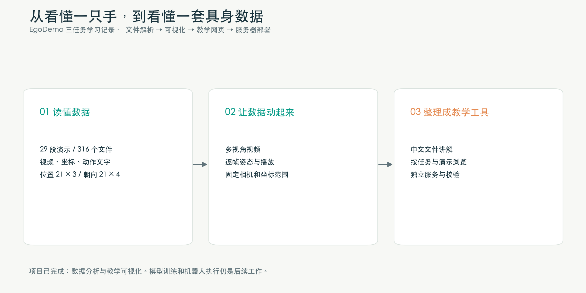
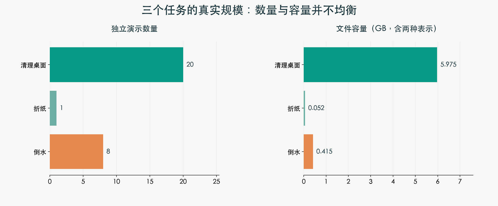
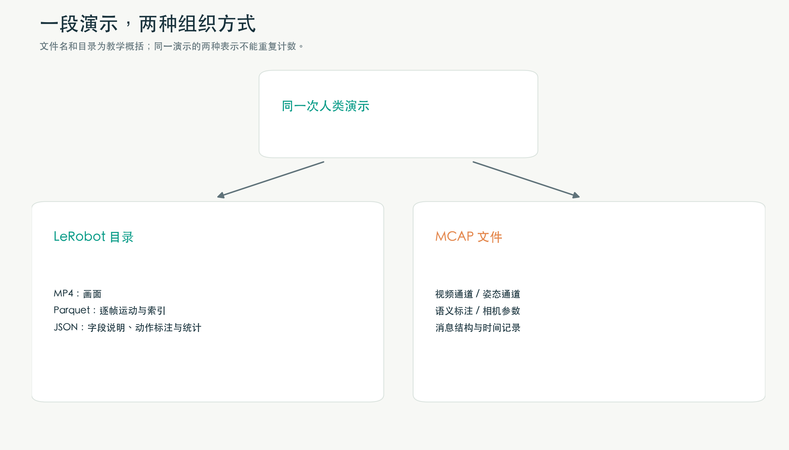
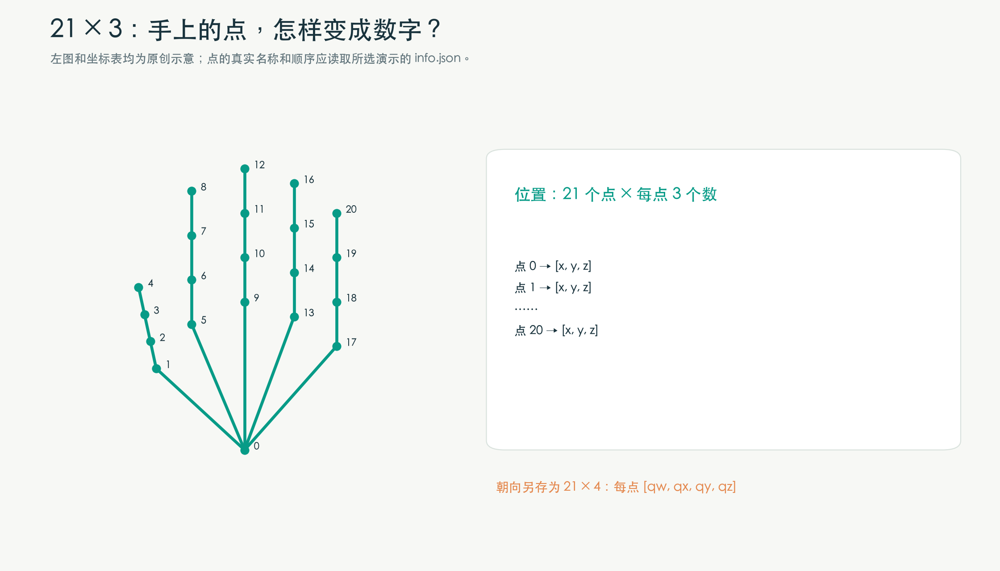
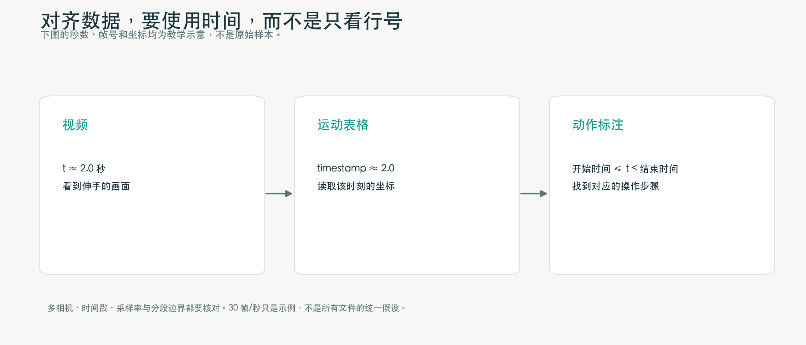
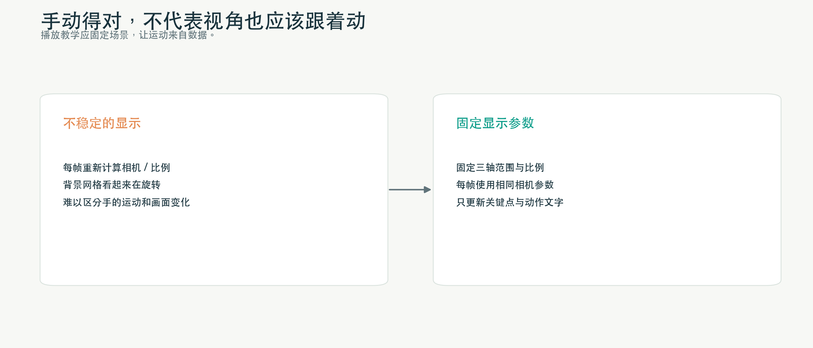
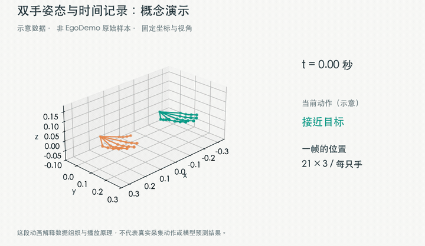
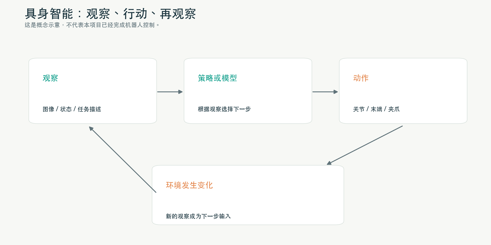
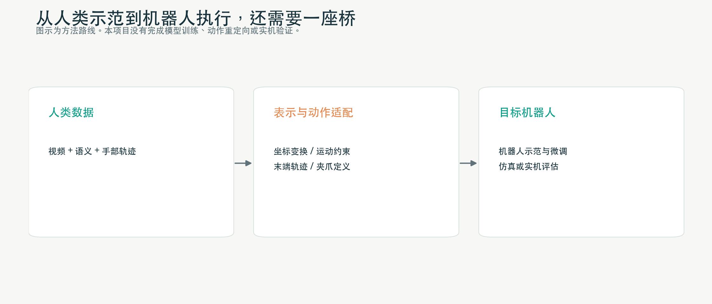

从打不开文件开始：我的 EgoDemo 学习记录
接触 EgoDemo 时，我还不熟悉具身智能数据。看了数据集介绍，又问了它有多大、能训练什么模型，接着就遇到了更具体的问题：下载下来的文件怎么打开？
MP4 倒是认识，Parquet 和 MCAP 就陌生了。后来页面上显示出一只手的坐标，我又追问：这些点的名字、21×3 这样的维度，究竟是数据里写好的，还是画图时定的？
这篇文章就按当时折腾的顺序记下来。代码和部署是在 AI 辅助下完成的，从上传文件的查看器，慢慢改成了一个能看视频、查字段、播放手部姿态的教学页。中间补上的基础知识，也放在对应的位置。

先下载三个任务，别把硬盘填满
第一次看仓库大小时，页面显示约 1.48 TB。我想先弄懂里面装了什么，没有必要一开始就全部下载。
这里也得把两个名字分开。EgoSuite-Open100K 是整个系列，EgoDemo 是其中约 50 小时的样例集。介绍里提到的十万小时规划，不能直接当成这个样例集的规模。1.48 TB 则是当时页面显示的仓库文件总量，里面还有多种版本和格式。官方数据卡
EgoDemo 记录的是人做事的过程。摄像头从操作人的视角拍摄，能看到眼前的物体和伸出去的双手；部分版本还有腕部视角。配套文件里则记录手部姿态、步骤文字等信息。项目介绍
最后选了三个任务：清理桌面垃圾、把纸折成三角形、从水壶往杯子里倒水。它们不需要额外解释场景，看视频就能大致知道人在干什么。
下载范围是固定仓库版本下，这三个任务名称对应的全部可用文件。核对后的数量如下，容量按十进制计算：
| 任务 | 原始名称 | 演示数 | 文件数 | 容量 |
|---|---|---|---|---|
| 清理桌面垃圾 | Clean Desk Waste | 20 | 226 | 约 5.975 GB |
| 把纸折成三角形 | Fold Paper into a Triangle | 1 | 10 | 约 52.26 MB |
| 从水壶往杯子里倒水 | Pouring Water from Kettle into Cup | 8 | 80 | 约 414.52 MB |
| 合计 | 29 | 316 | 约 6.442 GB |
这几个数字都是从下载清单核对的，另外保存的说明和许可证文件不算在 316 个任务文件里。按每段的帧数和帧率估算，29 段演示合起来约 19 分 40 秒。

这时碰到了第一个不太直观的地方：总共才 29 段演示，怎么有 316 个文件？
原来，一次操作会留下多种材料：不同摄像头的视频、逐帧运动数据、步骤标注、元数据。同一段记录还会提供 LeRobot 和 MCAP 两种组织方式。它们占用的存储都要下载，但统计演示数量和时长时，不能再算一遍。
下载后还检查了文件大小和 SHA-256，迁移到服务器时又检查了一次。SHA-256 相当于文件内容的指纹，能帮助确认传输是否完整；至于动作标注准不准，还得继续看内容。
文件看着多，其实围绕同一段操作展开
这里先记两个词，后面看目录会用到：task 是任务，例如倒水；episode 是一次具体演示，例如某个人完成了一次倒水。一个 task 可以有很多 episode。这次折纸任务只有一个。
下面是本次导出的一段演示的简化目录，演示名称用了占位符：
某个数据版本/
├── lerobot/
│ └── 某个任务/<episode-id>/
│ ├── annotation.json
│ ├── bad_frame_ratio.json
│ ├── data/chunk-000/file-000.parquet
│ ├── meta/
│ │ ├── info.json
│ │ ├── stats.json
│ │ ├── tasks.parquet
│ │ └── episodes/chunk-000/file-000.parquet
│ └── videos/
│ └── observation.images.<camera>/
│ └── chunk-000/file-000.mp4
└── mcap/
└── 某个任务/<episode-id>.mcap
这是这次下载到的结构。其他 LeRobot 数据集未必每段演示单独放一个目录，v3 也支持在分片文件里存放数据，再用元数据关联演示范围。LeRobot v3 文档
如果重新开始，我会先看 MP4，再打开 meta/info.json。
视频能让人知道这段数据对应什么操作。info.json 则告诉程序：提供了哪些字段，每个字段的形状是什么，点按什么顺序排列，帧率是多少。后面解释手部坐标，主要靠它。
其余文件可以按需要再找：
| 想知道什么 | 去哪里看 |
|---|---|
| 某个时刻手在哪里 | data/ 下的 Parquet |
| 这段时间正在做哪一步 | annotation.json |
| 坐标字段有哪些、形状和点名是什么 | meta/info.json |
| 最小值、最大值、均值等统计 | meta/stats.json |
| 任务编号对应什么名字 | meta/tasks.parquet |
| 演示长度、视频范围等索引信息 | meta/episodes/ 下的 Parquet |
| 有哪些坏帧相关条目 | bad_frame_ratio.json |
| 有哪些按时间记录的消息通道 | MCAP |
所以，即便都叫 Parquet，装的东西也可能不一样。data/ 下的表在本次导出里是一帧一行，meta/episodes/ 下的表概括的却是整段演示。光看扩展名还不够。

版本目录也有区别。本次子集里，EgoStand 提供头部视角和手部姿态，EgoProStandard 增加了腕部视角，带 -body 的版本还提供全身姿态。具体文件仍要逐段查看，比如这次折纸任务并没有这四个版本全部配齐。
Parquet 里的一格，原来可以装下一只手
我最初提出的需求很简单：建个网页，上传 Parquet，就能看看内容。
Parquet 可以先理解为给程序使用的表格文件。它采用列式存储，也能装嵌套数组，所以打开后不一定像 Excel 那样，一格只有一个数。Parquet 文档
以左手位置为例，一个时刻的一格里会有 21 组坐标：
第 0 个点：[x, y, z]
第 1 个点：[x, y, z]
……
第 20 个点：[x, y, z]
整组打印出来很长。起初看不清楚的那些数组，拆开以后，就是各个点的位置。
如果自己用 Python 查看，可以先装 pyarrow 和 numpy：
pip install pyarrow numpy
然后把路径换成自己下载的一段演示目录：
from pathlib import Path
import json
import pyarrow.parquet as pq
case = Path("/path/to/your/episode-directory")
info = json.loads((case / "meta/info.json").read_text())
data_file = next(case.glob("data/**/*.parquet"))
parquet = pq.ParquetFile(data_file)
print("行数：", parquet.metadata.num_rows)
for field in parquet.schema_arrow:
print(field.name, field.type)
feature = "observation.state.hand_left_world"
table = pq.read_table(data_file, columns=["timestamp", feature])
print(table.slice(0, 3))
这段代码先看字段，再只读时间戳和左手位置两列。看大文件时，这样比直接把所有内容打印出来方便。网页查看器后来也按这个思路做：先看字段和类型，再分页看内容，需要时展开一行里的数组。
页面上的 21×3，究竟是谁定的？
坐标显示出来后，我问过一个问题：“这些维度信息来自哪里？数据集里有体现么？”
这件事需要回到 info.json 确认。所查看的数据中，左手世界坐标字段是这样定义的：
字段：observation.state.hand_left_world
数值类型：float32
形状：[21, 3]
同一个字段还带有 names。它给出了关键点名称和排列顺序，以及 x、y、z 这三个坐标分量的名称。网页里的手腕、拇指、食指等点名，就是照着文件读取的。
如果想自己核对，接着前面的代码打印这个字段即可：
feature_info = info["features"][feature]
print(feature_info["shape"])
print(feature_info["names"])

21×3 的意思是每只手 21 个点，每个点三个位置数值。一只手共 63 个数，两只手共 126 个。
不过，不能顺手把这 126 个数叫作机器人的 126 个控制自由度。记录点的位置，与定义关节怎么驱动，是两回事。人体的点之间存在运动约束，机器人的关节和夹爪结构也另有定义。
如果以后把连续数据送进模型，数组前面还会加维度。一帧是 [21, 3]，连续 T 帧可以排成 [T, 21, 3]，一次放进 B 段窗口，就可能是 [B, T, 21, 3]。这些字母描述的是数据怎么堆放，不是又多出了什么身体部位。
文件里还有 21×4 的旋转字段。这次元数据给出的分量顺序是 qw, qx, qy, qz，用四元数表示朝向。位置描述“在哪里”，旋转描述“朝向哪里”。四元数的四个数并不是四个角度；接其他库时，也得留意它是否把 w 放在最后。当前网页主要画位置，没有把每个点的旋转坐标架全部画出来。
读到这里，还差一个条件：坐标是相对于哪里说的？
世界坐标相对于场景里的一个参考系；相机坐标相对于相机；像素坐标则是图像上第几列、第几行。世界坐标的 x、y，不能直接拿来当图片像素。想把三维点叠在视频画面上，得用到参考系之间的变换、相机内参和对应时刻。
相机内参描述焦距、主点等成像关系，外参描述参考系之间的位置与旋转。字段名里的 world 也不能单独证明单位就是米、某根轴就一定朝上。这些约定得继续查来源说明。这次图里的坐标保留数值，没有在依据不足时统一标成米。
MCAP 能打开了，视频却还要另外处理
接下来想看 MCAP。我一开始连名字都拼成过“macp”。
它可以把多种消息放进同一个文件，并记录各自的时间。摄像头、左右手姿态、相机参数和步骤标注，都可以占一个通道。读取时会遇到 channel 或 topic，也就是通道；schema 说明通道里的消息长什么样；message 才是某个时刻的那一条记录。MCAP 文档
第一版网页能列出通道和消息，但还不能直接看视频，于是又加了视频预览。
这次查看的视频通道采用 foxglove.CompressedVideo 消息结构。消息里有时间、压缩帧数据和编码信息，但这些内容并不是浏览器可以直接播放的 MP4 文件。消息结构说明
查看器需要提取完整视频通道，再生成预览文件。H.264 主要做封装转换；H.265 则通过 FFmpeg 转成浏览器比较容易播放的 H.264。这样能看到画面，不过预览按估算的典型帧率组织播放，精确的传感器同步还要另做。
做完这部分后，MCAP 和 LeRobot 的关系就容易理解了：同一段操作，前者把多路消息装在一起，后者拆成视频、表格和元数据。后续训练划分时，也要记得它们可能对应同一条演示。
查第 5 秒的手，不能只算“5 乘以 30”
视频可以播放，坐标也能读了，接着自然会想：能不能找到视频第 5 秒时的手？
假设数据严格按每秒 30 帧采样，用帧号和帧率换算时间很方便。但这次核对元数据时，清理桌面的演示里既有 30.0，也有 25.0 和接近 30 的小数值。把每段都写死成 30 FPS，就会找错位置。

因此，查姿态时更合适的起点是表里的 timestamp。接着前面的读取代码，可以先找距离目标时刻最近的一行：
import numpy as np
times = np.asarray(table["timestamp"].to_pylist(), dtype=float)
target_time = 5.0
row_index = int(np.argmin(np.abs(times - target_time)))
actual_time = float(times[row_index])
position = np.asarray(table[feature][row_index].as_py(), dtype=float)
print("采样时间：", actual_time)
print("时间差：", abs(actual_time - target_time))
print("位置形状：", position.shape)
运行前应确认表非空，目标时间在记录范围内，时间差也在可以接受的范围内。如果缺了一大段采样，“最近的一行”也可能离目标很远。
步骤标注则按起止时间寻找，例如 start_time ≤ t < end_time。这样走到两个步骤的交界处，不会同时选中前后两步。
这里还有一些没做完的工作。视频有自己的显示时间戳，MCAP 也有记录时间和消息内部时间，多个摄像头还可能有各自的采样情况。当前网页能分别查看视频和姿态，它们的播放器没有同步联动。要做严格对齐，不能只用上面这段找最近行的代码。
从上传查看器，改成了一个教学页
需求是边看边加的。最初只想上传 Parquet；随后想看 MCAP，又希望视频通道可以播放。等三个任务下载齐以后，继续在上传框里找文件就有些麻烦了，于是另做了一个直接读取这批数据的教学页。
现在的页面分成四部分。
“视频与步骤”用来先看人怎么操作，可以选任务、版本、演示和摄像头，再对照时间标注。中文步骤旁边保留英文原文，便于核对翻译。点击步骤能把视频定位到附近，播放器仍会继续播放，并没有把每个步骤裁成单独的视频。
“姿态实验室”是后来花时间比较多的地方。它能选一帧看坐标表，把左右手画成三维关键点，也能看手腕轨迹和整段姿态动画。绿色和橙色区分两只手，点之间的连线帮助辨认手形。
“文件逐个看”保留了查看原始内容的入口。看到解释不明白时，还能回到 JSON、Parquet 或 MCAP，查这句话到底依据哪个字段。
“数据与训练”放了一些入门说明，比如视频能提供什么信息、人手轨迹和机器人动作之间有什么差别。前面这些问题如果没有弄清楚，直接看模型名称还是很难判断能拿数据做什么。
手能播放了，坐标网格怎么也跟着动？
姿态图最初只能选帧。加上播放以后，我又问：“为什么播放的时候，坐标系一直动？”
画面里的手在动，观察角度和坐标网格也变，根本不方便比较前后位置。问题出在动画显示设置：当时固定了一部分轴范围，但每帧重绘时的场景参数还没有完整固定。

修改时，用整段动画的点确定统一的三轴范围，再固定轴比例和相机。每个动画帧沿用同一套相机位置、朝向和观察中心，只更新手部坐标。播放模式锁定视角，想自由旋转时再回到逐帧查看。
在 Plotly 里，这涉及轴的 range、aspectmode、aspectratio 和 scene.camera。它们管的是不同的事，光固定坐标范围，还不足以保证整个画面稳定。Plotly 参数文档
页面另外保留了“手腕移到原点”的显示选项，方便比较手形。选中后，两手各自平移，原本相隔多远就看不出来了。看两手配合、接近物体这类空间关系时，需要保留原始坐标。
下面这段 GIF 是为文章制作的合成示意，用来展示时间推进时怎样更新双手关键点和动作文字。它没有使用 EgoDemo 的真实轨迹，也不是模型输出。

实际教学页支持暂停、进度条和 0.5／1／2 倍速。整段播放用了有限数量的姿态抽样，控制页面体积；要查某一帧，仍可以在逐帧模式查看原始采样。
搬到服务器，两个页面分开运行
本地跑通后，又把程序和三个任务的数据放到服务器的 /data/datasets 下。上传查看器使用 8501 端口，三个任务的教学页使用 8502。
/data/datasets/
├── EgoDemo_three_tasks/ # 三个任务的数据
└── egodemo-classroom/
├── app/ # 程序
├── venv/ # 独立 Python 环境
└── state/ # 服务账户工作目录
服务通过专用账户运行，用 systemd 管理开机启动和异常重启。数据、程序和 Python 环境分开放，后面更新程序时也比较好找。
迁移后重新核对了 316 个文件的大小和哈希，检查服务账户能否读取数据，并测试了三个任务的页面和功能分支。当时从开发电脑访问两个端口的健康检查都成功，内置浏览器也出现过访问超时，遇到这种情况仍要分开排查服务和访问网络。
使用时的地址是 http://<服务器地址>:8502/。文章里就不放内部地址和连接账号了。
看完这些数据，再回头问“能训练什么”
刚开始我就问过 EgoDemo 能训练哪些模型。把文件看了一遍以后，这个问题才有了具体内容。
以倒水为例，视频记录人看到了什么；姿态记录手怎样移动；文字标注说明哪段时间在做哪一步。把这些信息按时间放在一起，就能为不同学习任务构造样本。
如果输入一小段视频，希望输出“正在倒水”，可以研究动作识别。如果输入长视频，希望找出拿起水壶、倒水、放下水壶的时间段，就是动作分段。用画面预测手部位置，可以研究姿态估计；用前面的姿态预测后面的位置，可以做轨迹预测。视频和文字还可以用于检索、匹配、描述等学习任务，但需要先整理对应的训练目标。
这些用途是根据数据内容推出来的，本次项目没有训练这些模型。标注的可靠性、坐标定义、场景分布，也都还会影响实验能做到什么程度。
人在动，为什么还不能直接让机器人照做？
理解这个问题，需要补上 observation 和 action。
Observation 是系统当时能看到或读到的信息，例如摄像头画面、机器人当前关节状态。Action 是接下来让机器人执行的控制量，例如末端位移、关节目标、夹爪开合。执行以后环境变了，系统再获取新的观察，继续选择动作。

人手关键点记录了一种运动状态，但机械臂需要的控制量未必长这样。比如人用五根手指拿水壶，两指夹爪该怎么抓？人类世界坐标中的一个位置，换到机器人基座坐标下在哪里？机器人能否到达，会不会碰到桌子？这些问题都要另外解决。

VLA 就是 Vision、Language、Action，通常指根据视觉和任务语言生成动作的模型。这里最容易被略过的恰恰是最后的 Action：采用了 LeRobot 格式，并不代表已经有适合目标机器人的动作标签。
文字也需要看具体含义。“正在倒水”可能是对当前片段的描述，“请往杯子里倒水”则是任务指令，两者用作监督时并不完全一样。视频能看到接触，也不代表文件里就有接触力或触觉标签。准备训练样本时，输入和目标都要回到字段确认。
如果以后做迁移，需要进一步研究动作表示和重定向，补充目标机器人的数据，再做仿真或实机评估。目前完成到的是数据查看与教学可视化，还没有走到这一步。
下一步想先试一个小的预测实验
比起直接上 VLA，一个更容易检查的起点是：给一段历史手腕轨迹，预测接下来短时间的位置。
先用“保持当前位置不动”和“沿最近速度继续移动”作基线，再考虑小规模时序模型。短时间的运动本来就有连续性，模型如果还不如这些方法，应该先看数据处理有没有问题。
测试集也不能把所有帧随机打散。相邻帧太像，同一段演示前一帧用于训练、后一帧用于测试，结果会偏乐观。我会把整段演示留在同一组里，它的不同摄像头、MCAP 和 LeRobot 表示也一起分组。有操作者和场景信息时，还要检查这些因素是否重合。
这次清理桌面有 20 段，可以用来练习按演示留出的流程；倒水 8 段，结果需要谨慎解释；折纸只有 1 段，适合调试，没法回答模型对另一段折纸演示表现如何。
做完以后，除了位置误差，还想把预测和真实轨迹叠在一张图里，看看误差出在哪一段。归一化参数只从训练组计算，避免用测试数据的信息。至于旋转预测，涉及四元数的归一化、q 与 −q 的等价性，以及适合旋转的误差，准备做的时候还需要单独处理。
这次先记到这里
目前留下的是两个能用的网页，以及一批已经知道该怎么读的数据。下次再看到一格很长的数组，可以回到元数据查点名和形状，再选一个时刻画出来；看到一个三维动画，也会多检查一下是不是视角和坐标比例在变化。
还有一个发布时才碰到的问题：能下载研究，不代表能把原始片段直接附在博客里。查看本次版本的许可后，文章保留了汇总数字、文件结构和原创图解，动画也另用合成数据制作，没有附真实视频、姿态轨迹或逐条记录清单。原始数据请从官方入口获取，并核对使用条款。
后续要训练模型，还得继续处理样本构造、动作定义和评估。这次至少已经能从一段倒水记录出发，找到视频、文字和坐标分别在哪里了。
用到的资料
文章初稿整理于 2026 年 10 月 21 日，2026 年 10 月 27 日改写。容量、文件数和字段形状沿用本次下载核对的结果，不代表仓库之后的实时状态。汇总记录见配套的 source_facts.json。图解为本文制作，动画为合成示意。